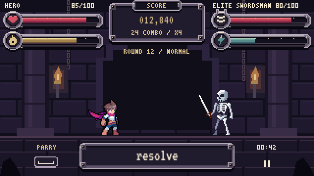
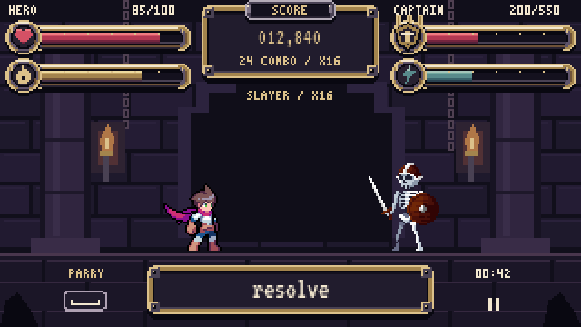
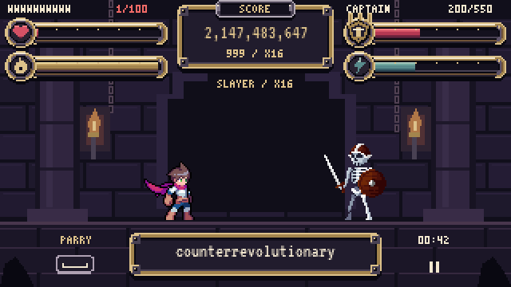
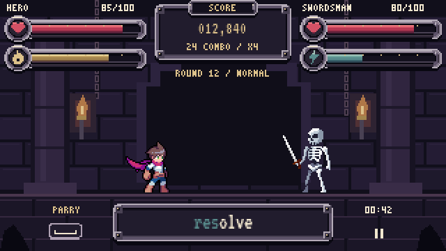
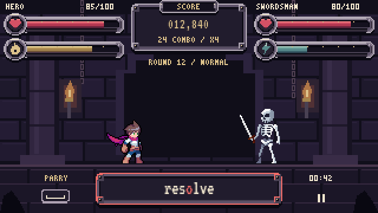
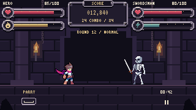
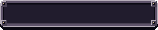
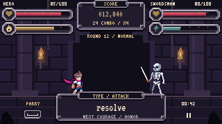
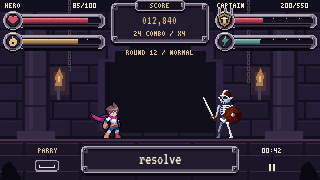
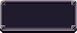

hud-elite



hud-boss


hud-slayer



hud-stress-low-hp



hud-correct



hud-error

Giữ background, sprite và bố cục chiến đấu v2. Không tích hợp Unity. Đã tự tìm, xem chín pin mới và chọn reference ổ tròn / mặt bevel / bảng tối theo hướng plan; không chờ user tìm thêm ảnh. Nguồn chọn và đánh giá nằm trong README.
Reference → component → sprite thật · Lớp asset / HP 0–100% · Nguồn và kiểm chứng
Gõ “resolve” vào ô review. Sai ký tự đưa tiến độ về đầu. Điều khiển nằm ngoài HUD.








Đổi ổ bậc chéo thành ổ tròn pixel, tăng diện tích bevel sáng/tối và tương phản icon HP/tài nguyên. Giữ bố cục và dữ liệu.


Ảnh reference tải trực tiếp từ Pinterest khi có mạng; không đóng gói asset của tác giả. Hai nguồn CHỌN bổ sung bằng chứng cho kết cấu đã mô tả trong plan, theo quyền tự chọn/tự đánh giá của user.
| Reference | Component của revision | HUD cạnh sprite thật |
|---|---|---|
CHỌN: ổ tròn nối thanh, mặt bevel sáng/tối (hàng giữa dưới) | resource-socket |  |
CHỌN: mặt bảng tối, cạnh kim loại nhiều sắc; không lấy ornament | typing-frame | |
ĐỐI CHIẾU: mặt trước / cạnh sáng / bóng chân của bảng |  score-frame | |
The Druid — boss endcaps, fill/ticks tách | resource-frame | |
Bóng chân và mặt nhiều lớp; không lấy gỗ/lá | typing-frame | |
Thanh cạn vẫn thấy lòng rãnh; không lấy hiệu ứng vỡ | resource-track |